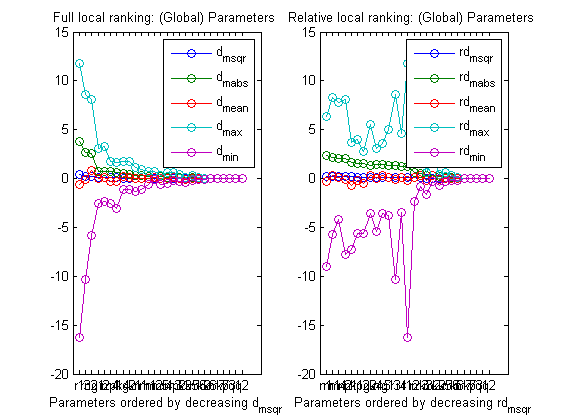
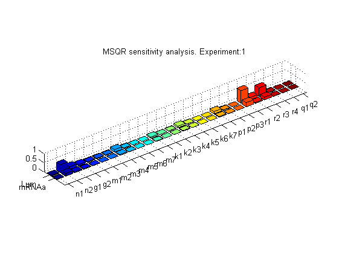
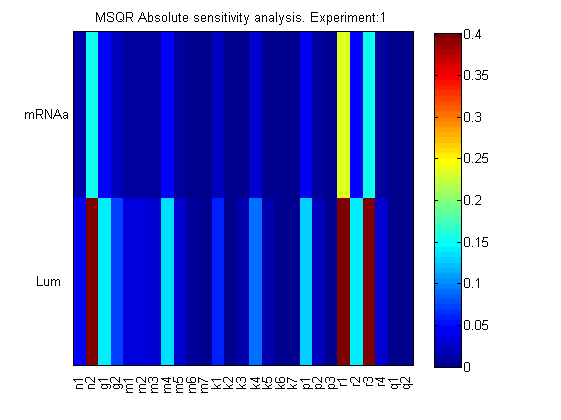
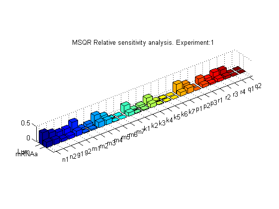
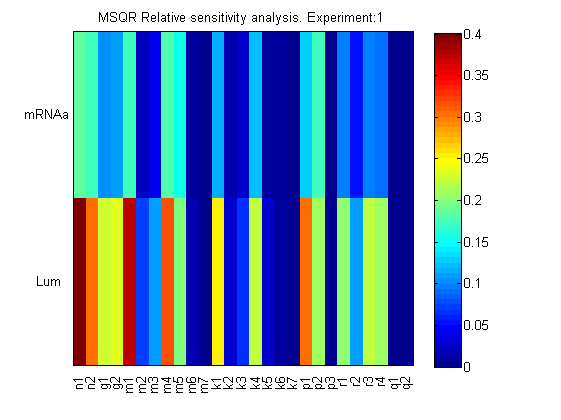

AMIGO_LRank -- Local ranking of model unknowns
Contents
- Computes (local) sensitivities for a given value of model unknowns, keeps information for all observables and all experiments
- Computes overall (for all experiments and observables) ranking of global unknowns (experiment independent parameters and initial conditions)
- Plots sensitivities evolution with time
- Plots/Reports overall local ranking of global unknowns
- Plots bars and 2D figures of sensitivities for all observables and all experiments for global and local unknowns
See also
Example
clear; %============================ % RESULTS PATHS RELATED DATA %============================ inputs.pathd.results_folder='arabidopsis'; inputs.pathd.short_name='arabidopsis'; inputs.pathd.run_overwrite='on'; %============================ % MODEL DEFINITION %============================ inputs.model.n_st=7; inputs.model.n_par=27; inputs.model.n_stimulus=1; inputs.model.st_names=char('CL_m','CL_c','CL_n','CT_m','CT_c','CT_n','CP_n'); inputs.model.par_names=char('n1','n2','g1','g2','m1','m2','m3','m4','m5','m6',... 'm7','k1','k2','k3','k4','k5','k6','k7','p1','p2',... 'p3','r1','r2','r3','r4','q1','q2'); inputs.model.stimulus_names=char('light'); inputs.model.eqns=... char('dCL_m=q1*CP_n*light+n1*CT_n/(g1+CT_n)-m1*CL_m/(k1+CL_m)',... 'dCL_c=p1*CL_m-r1*CL_c+r2*CL_n-m2*CL_c/(k2+CL_c)',... 'dCL_n=r1*CL_c-r2*CL_n-m3*CL_n/(k3+CL_n)',... 'dCT_m=n2*g2^2/(g2^2+CL_n^2)-m4*CT_m/(k4+CT_m)',... 'dCT_c=p2*CT_m-r3*CT_c+r4*CT_n-m5*CT_c/(k5+CT_c)',... 'dCT_n=r3*CT_c-r4*CT_n-m6*CT_n/(k6+CT_n)',... 'dCP_n=(1-light)*p3-m7*CP_n/(k7+CP_n)-q2*light*CP_n');
IMPORTANT:
User may select any customised name but: n, t, u, y, ydot, par, tlast, told, pend and v which are reserved words
inputs.model.par=[7.5038 0.6801 1.4992 3.0412 10.0982... 1.9685 3.7511 2.3422 7.2482 1.8981 1.2 3.8045... 5.3087 4.1946 2.5356 1.4420 4.8600 1.2 2.1994... 9.4440 0.5 0.2817 0.7676 0.4364 7.3021 4.5703 1.0]; %================================= % EXPERIMENTAL SCHEME DEFINITION %================================= % Here conditions for simulation are specified inputs.exps.n_exp=1; inputs.exps.t_f{1}=120; inputs.exps.n_exp=1; inputs.exps.exp_y0{1}=[0 0 0 0 0 0 0]; inputs.exps.t_con{1}=[0 120]; inputs.exps.u{1}=1; inputs.exps.u_interp{1}='sustained'; inputs.exps.n_obs{1}=2; inputs.exps.obs_names{1}=char('Lum','mRNAa'); inputs.exps.obs{1}=char('Lum=CL_m','mRNAa=CT_m');
More information regarding the inputs used in this example can be found here.
AMIGO_Prep(inputs); AMIGO_LRank(inputs);
***********************************
* AMIGO, Copyright @CSIC *
* AMIGO2_R1 [July 2013] *
***********************************
*Date: 28-Sep-2015
------>Pre processing....this may take a few seconds.
------>Checking inputs....
------> WARNING message
AMIGO_check_model: You did not specify inputs.model.exe_type, standard will be assumed
By default ode15s will be used.
By default sensmat will be used.
------> Generating Matlab file...
D:\AMIGO2_REPO_2014\AMIGO_R2012_cvodes\Results\arabidopsis\fcn_arabidopsis.m
------>Files generated....
***********************************
* AMIGO, Copyright @CSIC *
* AMIGO2_R1 [July 2013] *
***********************************
*Date: 28-Sep-2015
------>Pre processing....this may take a few seconds.
------>Checking inputs....
------> WARNING message
AMIGO_check_model: You did not specify inputs.model.exe_type, standard will be assumed
By default ode15s will be used.
By default sensmat will be used.
------> WARNING message
You have not provided neither the number nor the sampling times.
Continuous sampling will be assumed for experiment 1
Note however that you may modify your input file by adding
inputs.exps.n_s{iexp} and inputs.exps.t_s{iexp}
------>Performing local sensitivity analysis and ranking of unknowns
-------------------------------
Local sensitivity problem related active settings
-------------------------------
senssolver: sensmat
ivp_RelTol: 1e-005
ivp_AbsTol: 1e-007
Backward Differentiation (BDF): on
modified sens_sys.m is used (ode15s based). For further info type 'help sens_sys'.
------> RANKING for experiment: 1
------>ABSOLUTE Ranking of model unknowns:
par value d_msqr d_mabs d_mean d_max d_min
____________________________________________________________________________________________
r1 2.8170e-001 3.6809e-001 3.7481e+000 -5.9977e-001 1.1773e+001 -1.6226e+001
r3 4.3640e-001 2.5067e-001 2.6208e+000 -8.1072e-002 8.6050e+000 -1.0308e+001
n2 6.8010e-001 2.3184e-001 2.5841e+000 8.4981e-001 8.1262e+000 -5.8412e+000
g1 1.4992e+000 7.3778e-002 7.7466e-001 2.1235e-002 3.0422e+000 -2.5420e+000
r2 7.6760e-001 7.3222e-002 7.4306e-001 1.2149e-001 3.2343e+000 -2.3354e+000
m4 2.3422e+000 7.0017e-002 7.7329e-001 -2.5481e-001 1.7606e+000 -2.5459e+000
p1 2.1994e+000 6.6710e-002 6.5602e-001 -2.6281e-001 1.6688e+000 -3.0692e+000
k4 2.5356e+000 4.6863e-002 5.1514e-001 1.8455e-001 1.7202e+000 -1.1413e+000
g2 3.0412e+000 3.8666e-002 3.8949e-001 1.0538e-001 1.7463e+000 -1.1182e+000
k1 3.8045e+000 3.2518e-002 3.4158e-001 -9.4776e-003 1.1154e+000 -1.3598e+000
n1 7.5038e+000 2.6066e-002 2.7299e-001 -8.6532e-003 8.8712e-001 -1.0971e+000
m1 1.0098e+001 1.7842e-002 1.8697e-001 5.6047e-003 7.5574e-001 -6.0545e-001
m2 1.9685e+000 1.6599e-002 1.5006e-001 1.3247e-001 6.8441e-001 -1.1210e-001
m5 7.2482e+000 1.5446e-002 1.6780e-001 -2.0661e-002 3.5818e-001 -5.9928e-001
r4 7.3021e+000 1.3982e-002 1.4623e-001 4.4818e-003 5.7786e-001 -4.8067e-001
m3 3.7511e+000 1.3315e-002 1.2458e-001 8.0485e-002 6.0718e-001 -2.2528e-001
p2 9.4440e+000 1.2370e-002 1.3804e-001 1.1225e-002 4.1345e-001 -2.8608e-001
k3 4.1946e+000 8.0512e-003 7.5812e-002 -4.9003e-002 1.2990e-001 -3.5489e-001
k5 1.4420e+000 6.9742e-003 7.7389e-002 8.8120e-003 2.6373e-001 -1.5355e-001
m6 1.8981e+000 3.3938e-003 3.6995e-002 -3.0183e-003 9.4984e-002 -1.2550e-001
k2 5.3087e+000 3.1684e-003 3.0506e-002 -1.8758e-002 5.5293e-002 -1.3538e-001
k6 4.8600e+000 1.0490e-003 1.1497e-002 1.0141e-003 3.8633e-002 -2.8316e-002
m7 1.2000e+000 0.0000e+000 0.0000e+000 0.0000e+000 0.0000e+000 0.0000e+000
k7 1.2000e+000 0.0000e+000 0.0000e+000 0.0000e+000 0.0000e+000 0.0000e+000
p3 5.0000e-001 0.0000e+000 0.0000e+000 0.0000e+000 0.0000e+000 0.0000e+000
q1 4.5703e+000 0.0000e+000 0.0000e+000 0.0000e+000 0.0000e+000 0.0000e+000
q2 1.0000e+000 0.0000e+000 0.0000e+000 0.0000e+000 0.0000e+000 0.0000e+000
____________________________________________________________________________________________
------>RELATIVE Ranking of model unknowns:
par value rd_msqr rd_mabs rd_mean rd_max rd_min
____________________________________________________________________________________________
____________________________________________________________________________________________
n1 7.5038e+000 2.2035e-001 2.3880e+000 -3.1961e-001 6.3560e+000 -8.9797e+000
m1 1.0098e+001 2.0429e-001 2.2042e+000 3.4560e-001 8.3245e+000 -5.7445e+000
m4 2.3422e+000 1.8086e-001 2.0818e+000 1.2430e-001 7.8157e+000 -4.1488e+000
n2 6.8010e-001 1.7421e-001 2.0251e+000 -8.4836e-002 8.1262e+000 -7.8034e+000
p1 2.1994e+000 1.6487e-001 1.6824e+000 -6.7739e-001 3.7223e+000 -7.2983e+000
k1 3.8045e+000 1.3937e-001 1.5157e+000 -2.0338e-001 4.0480e+000 -5.6431e+000
p2 9.4440e+000 1.3718e-001 1.5744e+000 -4.9695e-001 2.7230e+000 -5.6023e+000
g2 3.0412e+000 1.2887e-001 1.3678e+000 3.2441e-001 5.5555e+000 -3.6234e+000
k4 2.5356e+000 1.2806e-001 1.4862e+000 -3.6417e-002 3.0348e+000 -5.3845e+000
m5 7.2482e+000 1.2496e-001 1.4367e+000 3.2531e-001 3.6138e+000 -3.5882e+000
g1 1.4992e+000 1.2408e-001 1.3580e+000 1.4084e-001 4.9750e+000 -3.7535e+000
r3 4.3640e-001 1.2231e-001 1.3361e+000 -1.1480e-001 8.6050e+000 -1.0308e+001
r4 7.3021e+000 1.1425e-001 1.2467e+000 1.1809e-001 4.6027e+000 -3.5107e+000
r1 2.8170e-001 1.1382e-001 1.2203e+000 -1.5291e-001 1.1773e+001 -1.6226e+001
r2 7.6760e-001 6.2356e-002 6.6317e-001 1.1588e-001 3.2343e+000 -2.3354e+000
m3 3.7511e+000 5.8692e-002 5.5475e-001 3.6489e-001 2.9162e+000 -8.1546e-001
k3 4.1946e+000 3.6634e-002 3.5977e-001 -2.1517e-001 5.9622e-001 -1.6600e+000
m2 1.9685e+000 3.6579e-002 3.3346e-001 2.8593e-001 2.1591e+000 -2.7683e-001
k2 5.3087e+000 1.6678e-002 1.7498e-001 -8.2668e-002 3.7924e-001 -6.6985e-001
k5 1.4420e+000 1.4147e-002 1.4682e-001 2.4564e-002 5.8281e-001 -2.5315e-001
m6 1.8981e+000 7.7376e-003 8.5591e-002 2.8094e-002 3.1222e-001 -1.6832e-001
k6 4.8600e+000 6.0776e-003 6.7970e-002 -2.1856e-002 1.3262e-001 -2.3945e-001
m7 1.2000e+000 0.0000e+000 0.0000e+000 0.0000e+000 0.0000e+000 0.0000e+000
k7 1.2000e+000 0.0000e+000 0.0000e+000 0.0000e+000 0.0000e+000 0.0000e+000
p3 5.0000e-001 0.0000e+000 0.0000e+000 0.0000e+000 0.0000e+000 0.0000e+000
q1 4.5703e+000 0.0000e+000 0.0000e+000 0.0000e+000 0.0000e+000 0.0000e+000
q2 1.0000e+000 0.0000e+000 0.0000e+000 0.0000e+000 0.0000e+000 0.0000e+000
____________________________________________________________________________________________
> NaN% of successful simulationn
> NaN% of successful sensitivity calculations
------>Plotting results....
------> WARNING message
Overall ranking plots are available for more than one unknown initial condition
------>Results (report and struct_results.mat) and plots were kept in the directory:
Results\arabidopsis\LRank_arabidopsis_run1
Click <a href="matlab: cd('D:\AMIGO2_REPO_2014\AMIGO_R2012_cvodes\Results\arabidopsis\LRank_arabidopsis_run1')">here</a> to go to the results folder or <a href="matlab: load('D:\AMIGO2_REPO_2014\AMIGO_R2012_cvodes\Results\arabidopsis\LRank_arabidopsis_run1\strreport_arabidopsis_run1.mat')">here</a> to load the results.
     AMIGO_htmldoc_inputs(inputs,fullfile(pwd,'html','lrankex1.html'));